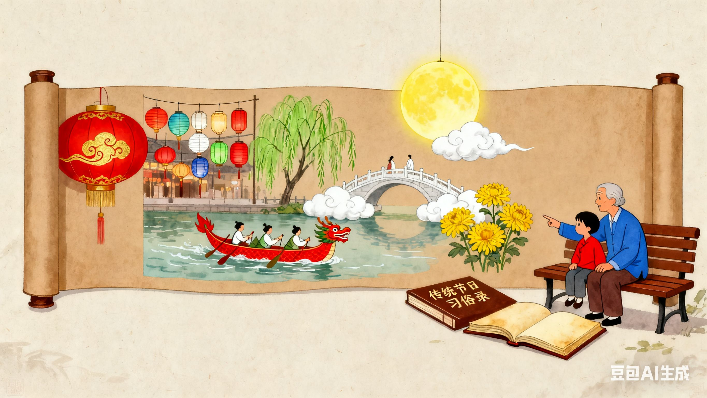

传统节日：流淌在时光里的文化印记
传统节日，是中华民族在漫长历史长河中沉淀下来的文化瑰宝，是连接过去与现在的情感纽带，更是承载着民族信仰、习俗与智慧的重要载体。每一个传统节日，都像一幅色彩斑斓的画卷，描绘着不同的民俗风情；又像一首悠扬婉转的歌谣，诉说着古老的故事与情怀。从辞旧迎新的春节，到赏月思乡的中秋，这些节日贯穿全年，融入了人们的日常生活，成为了民族文化不可分割的一部分。下面，就让我们一同走进传统节日的世界，探寻其中的独特魅力。

传统节日，是中华民族在漫长历史长河中沉淀下来的文化瑰宝，是连接过去与现在的情感纽带，更是承载着民族信仰、习俗与智慧的重要载体。每一个传统节日，都像一幅色彩斑斓的画卷，描绘着不同的民俗风情；又像一首悠扬婉转的歌谣，诉说着古老的故事与情怀。从辞旧迎新的春节，到赏月思乡的中秋，这些节日贯穿全年，融入了人们的日常生活，成为了民族文化不可分割的一部分。下面，就让我们一同走进传统节日的世界，探寻其中的独特魅力。